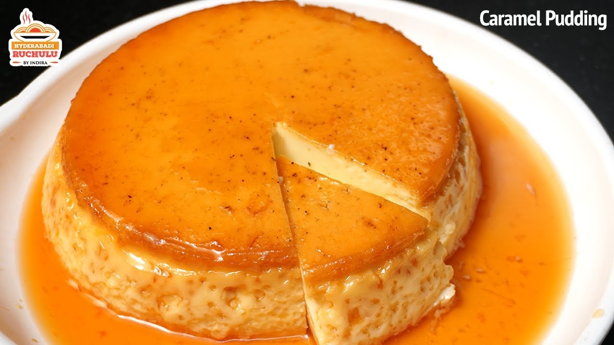

Pudding

Description
Egg pudding is a yummy treat that's smooth and creamy! It's made with eggs, milk, and sugar, and sometimes has a yummy vanilla flavor. Some egg puddings are baked in the oven, while others are cooked in a pot on the stove top.
It's perfect for a sweet snack or a light dessert, and you can eat it warm or cold.
Ingredients
- 2 eggs
- 1/4 cup granulated sugar
- 1 cup milk
- 1/2 teaspoon vanilla extract
- Pinch of salt
Steps
- Ask an adult to help you with the stove and sharp tools.
- Preheat the oven to 350°F (175°C).
- In a medium bowl, whisk together the eggs, sugar, milk, vanilla extract, and salt until well combined.
- Pour the mixture into four ramekins or custard cups.
- Place the ramekins in a baking dish and carefully pour hot water into the baking dish to come halfway up the sides of the ramekins. This is called a water bath.
- Bake for 30-35 minutes, or until the pudding is set but still slightly jiggly in the center.
- Remove the ramekins from the water bath and let them cool for a few minutes before serving.